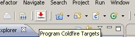
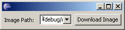
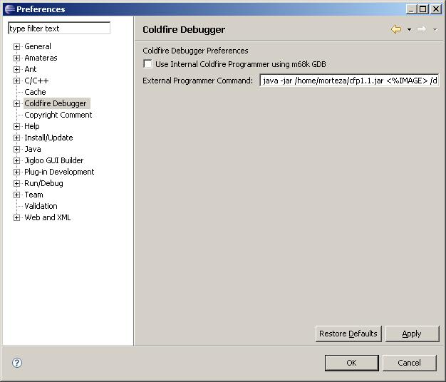

The Coldfire debugger supports downloading image files into targets. This process can be done by two methods.
Internal programmer connects to the board using GDB/MI and download the image file into the board. By using
this method you don't need any external tools to program the target. But this method depends to GDB supports
the target. For customized target, you should use external tools like CF-Flasher. The external programmer
provides an interface to pass corresponding parameters to the tool in command line mode. When you start
debug session, by default debugger load selected image into the board using GDB, then start image from its
main function (it's the default case, you can change it at the Intialize tab of your debug configurations.
Note: Use external tools which supports command line parameters (with or without UI).
GDB can load image files (e.g. ELF) into the selected target using 'load' command, if you have a standard board
which is introduced to the GDB, you can program it using the following steps. Consider that before these steps,
you should set desired programmer (Internal or External) in the preferences page (described in the next section).
Note: You should compile and build your project before using programmers in order to select the image.
Step 0: Single Click on your working project to make it currently selected project.
Step 1: Select Program Coldfire Targets button from the Eclipse toolbar.

A window contains list of avaiable images of the selected projects will apears.
Step 2: Select desired image you wish programmer to downlaod into the board.
Step 3: Click Program Image.

The programmer shows you confirmation if download was successfull.
By default, the Coldfire debugger will download using its internal programmer. You can change this setting
in the Window > Preferences... > Coldfire Debugger page (It's also a category). This pages
contains a tickmark box to select internal programmer. If you select external programmer, you should also sets
shape of parameters passing to the external tool. <%IMAGE>s will be replaces by the selected image
to download. Place <%IMAGE>s where the image path should be. For internal programmer you don't need
to provide this string.
